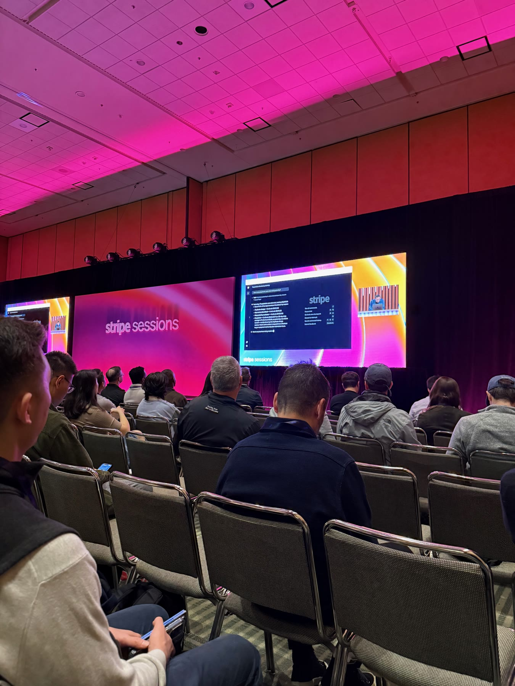
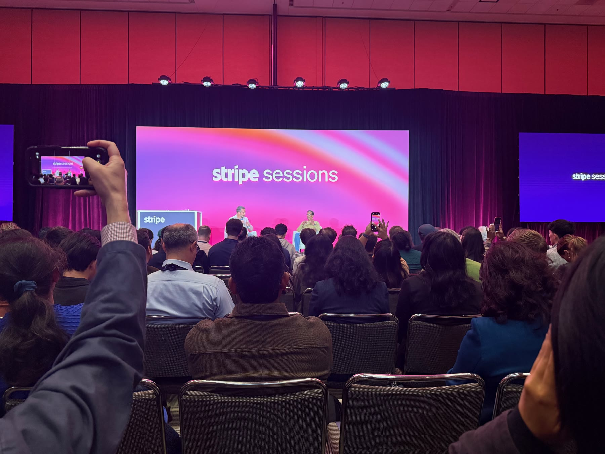
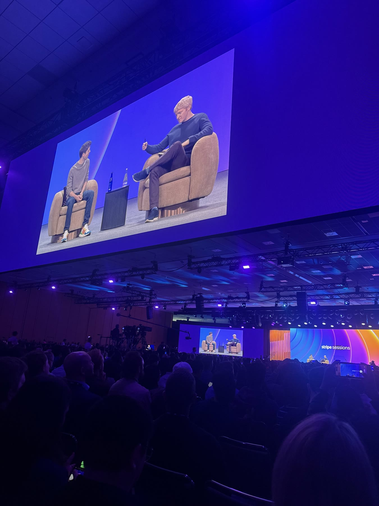
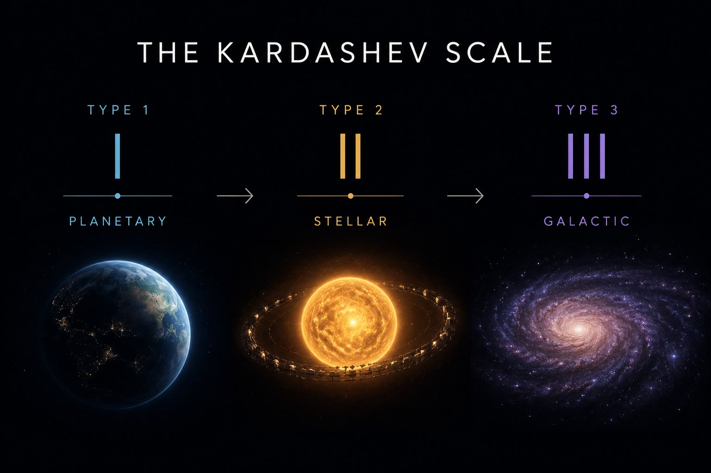

Stripe Sessions Reflection
The main themes I've gathered from attending Stripe Sessions:
- Agentic Commerce
- Stablecoins
- Energy constraints/token pricing
The whole day revolved around these central themes and most of them stem from AI Agents.

For the first talk, Stripe announced new products. The new products were: Stripe Treasury (instant and free transfers and 2% interest with treasury balance). Agentic Commerce Suite (ACS) Agent workflows Stripe Apps Stripe Database Link wallet (stable coin payments and transfers)
This made me realize as agents are more relevant, individual enterprises need to allow a sandbox for agent use cases, this sandbox is usually in the form of apps and workflows. In addition to this the agents can utilize Stripe Databases. This is very interesting since this is also where Databricks is going with Databricks Apps/AI Gateway/Catalog. Databricks even announced a new Stripe connector that seamlessly brings Stripe data to your Databricks catalog without ETL/setup.
With AI Agents the moat for existing enterprises is the data, the infrastructure, and how to connect your agents to this infrastructure. The three pillars of enterprise value in the agentic era are:
- Quantitative Data (Stripe Database, reports, etc)
- Qualitative Context (products, customers, trends, insights)
- Execution Layer (AI harness, apps, workflows, CLI, API, MCP)
After the product showcase the following talks revolved around Agentic Commerce. Agentic Commerce is the new channel for purchasing through Agents. With Stripe's Agentic Commerce Suite (ACS) you can unlock the different purchasing channels by Agent such as OpenAI, Meta, Anthropic, etc. With this unlocked you can let agents discover your products by customizing the specs/JSON for product description, product SKU, etc. Modern day webpages/merchants need to adapt for Agents to discover their product. The sessions showed data and studies where there is an inflection point of humans vs agents reading their documentation (70% of viewers of Vercel docs are agents), browsing their sites, and in the future making the purchases. Agentic commerce brought a lot of ideas to mind. This seems to be the common pattern with agent interfaces. Building the backend CLI, API, MCP, etc so that agents can grab context/whatever they need more efficiently without the burden of going through the browser and traversing through useless human interfaces which are inefficient for agents.
Interestingly, stablecoins were brought up as the currency/transaction method for the era of agentic commerce. Stablecoins are beneficial for global payments, fast, cheap, traceable, and with the Link wallets it is made possible through Stripe. Their vision for this era is to give your Link wallet a certain budget and let your agent decide to make purchases with that budget on its own. Patrick Collison gave an example of what he did with his agent with the Link launch yesterday. His agent purchased something for itself, making the decision on it's own.

Another high issue problem that is being solved/worked through right now is token pricing. I attended the talk with the Anthropic pricing person and they mentioned the dynamic nature of pricing tokens. There are lots of variables such as time of day, magnitude of the model, actual usage, actual knowledge generated, and how many of these variables need to be in mind when figuring out the calculus of metered billing. In addition to the calculus they also had to balance the stakeholders' requirements. This included finance, product, and end users. This made me think that token pricing is similar to energy pricing. This felt like they were talking about electricity. The next day I tuned in to the livestream and John Collison actually spoke about electricity. He mentioned that it took 30 years for electricity to realize productivity. This was because factories had to be rebuilt for this infrastructure. Once it was rebuilt for electricity human productivity 2-3Xed. With AI this will probably take less than 30 years. But this idea is extremely similar to rebuilding the infrastructure of the web, internet, data processing in a way that is agentic friendly.
These last few days I have been thinking deeply about energy. We watched the movie Project Hail Mary over the weekend. The premise was around a space organism that was eating the sun's energy. Without a solution the earth and it's inhabitants would eventually die off from energy starvation. It all comes back to energy. What we are doing, the GPUs, the inference, the AI workflows, AI Agents, are all just abstractions of energy allocation. Energy is the base layer:
Energy → compute → intelligence → agents → workflows → transactions → human-valued outcomes

This theme is common not just in the Stripe sessions but also in the modern world/tech scene. Elon is pushing for space so we can level up our place in the Kardashev scale, Meta is incentivizing learning data center engineering, and Sam Altman is incredibly interested and involved with data centers/energy. Energy is the next step of improvement. With abundant energy we will have abundant intelligence. Our place as humans will be to decide what is valuable, what we need to spend our time on, and what is tasteful. Human taste/value will be the scarce resource. This is also made obvious with the amount of solopreneurs, the ease of succeeding in smaller teams, the amount of productivity a single person can have. This abundance of intelligence is already being utilized and the human decision of where its being allocated (energy allocation) is what is the deciding factor between a valuable asset and slop.

Energy expands what is possible. Taste decides what is worthwhile.
Subscribe
Get new posts by email.